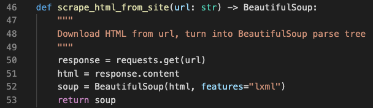

Overview
The target audience for this post is any person or team who anticipates leading tech projects for their business or organization, but who does not have experience as a professional developer. The goal is to share a few perspectives on what constitutes ‘good code’ versus ‘bad code,’ and how to spot the difference. The purpose of this is to empower such individuals to inspect the code being developed on their tech projects.
Executive Summary
For non-developers, working on tech projects can feel like taking your car to the mechanic. You often have to describe what current problems you face, and then wait for an inspection and a technical description that can be confusing. Yes, you can get a second opinion. But ultimately it feels like a leap of faith. This can be frustrating, especially if you don’t know how to ‘inspect what you expect,’ so to speak. Did that mechanic do a quality job of rebuilding your transmission? Or was it a half-baked effort? Who knows?
To mitigate this situation for those who have to commission tech teams, I’d like to share a few points on areas anyone can and should inspect in the code they’ve commissioned. Even if you don’t have coding experience, there a few things you can inspect ‘under the hood.’ Three easy examples are:
-
Documentation on the logic and purpose of the code
-
Explanations for all functions used
-
Thoughtful names for all concepts
Documentation on the logic and purpose of the code
This point is seemingly obvious, but you’d be shocked how often developers fail to document the logic and purpose of the code they write. Perhaps the best way to highlight this point is to provide an example. So here goes… what is the purpose, or logic, of the following code? (This code works properly, by the way…)
The answer to that questions: nobody knows. An experienced developer might look at that and recognized that the script is some form of a web spider, but its completely confusing. This is because there is no up-front notes explaining just want exactly is going on with this code. So lets revisit that code, with some up-front notes and re-ask the question. What is the purpose, or logic, of this code?
How obvious is that!? I won’t argue that the comments included in this script are the best example you’ll ever find, but how much easier is it to understand the purpose and logic of that code with a few simple lines of context? The main point here: you can and should expect such basic comments in code.
Explanations for all functions used
Once explain, this point is nearly as obvious as the aforementioned point on documentation. Just like documentation for the code overall, the code should have in-line comments throughout to explain each of various parts of the code. Again, the best way to highlight this point is through an example.
Pop quiz: what does the following code do?
Like our first example, the answer to the pop quiz: nobody knows. This is because there is no in-line documentation. As simple as it sounds, little things like in-line documentation make a world of difference. Let’s revisit that code, cleaned up, and re-ask our question. What does this code do?

Again, how much easier is this code to read and understand? Even if ‘Download HTML from url, turn into BeautifulSoup parse tree’ doesn’t make sense to you, at least you can properly identify what the code is meant to do. That is important because it means the next developer will be able to do the same, and won’t have to spend days trying to decipher your code base the next time you want to work on it.
Thoughtful names for all concepts
The above examples highlight another important point: the significance behind thoughtfully titling all of the concept in the code base.
Looking at the bad examples I’ve included, you’ll notice that the concepts were all reduced to letters in alphabetical order: ‘a,’ ‘b,’ ‘c,’ and so on. In comparison to the second example, this is incredibly confusing. Consider this block of code, for instance:
for j in i …
o = [t for t in n if k(t)] …
Yikes! That couldn’t possibly be more confusing. Now contrast that with the following:
Again, I won’t try to convince you that this example is the paragon of beautifully written code, but how much easier is this to understand? Even if you are not a developer, you can probably gain an idea of what this code is meant to do. Names like “write_to_files” and “file_name_list” are a whole lot more intuitive than “l” and “m”. To reinforce our previous point, this matters because if a non-developer can make sense of it, then it will be that much easier for the next programmer to work with this code.
Conclusion: Code should read like a tutorial
The three points I’ve shared here should help any non-developer take a ‘look under the hood’ of their code base and gage the quality of workmanship. The main take-away, however, is this: good code should read like a tutorial. That’s to say the code should be simple, understandable, and there should be plenty of comments throughout the code to explain, point by point, what is going on each step of the way.